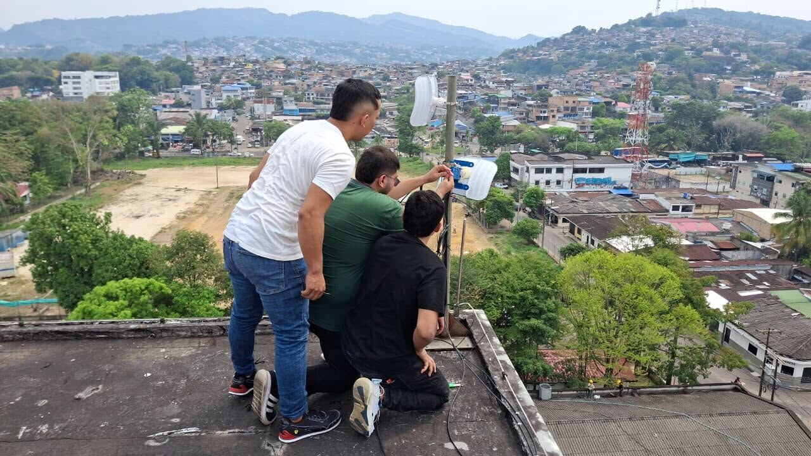
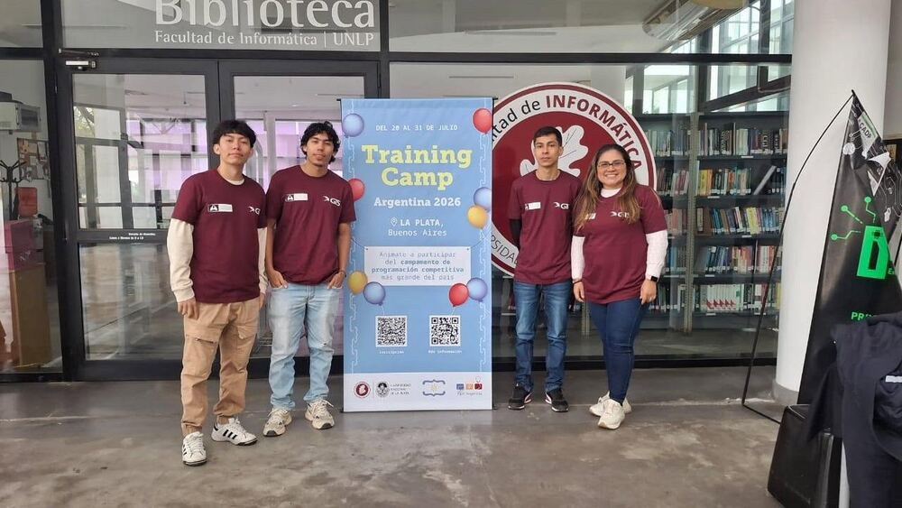
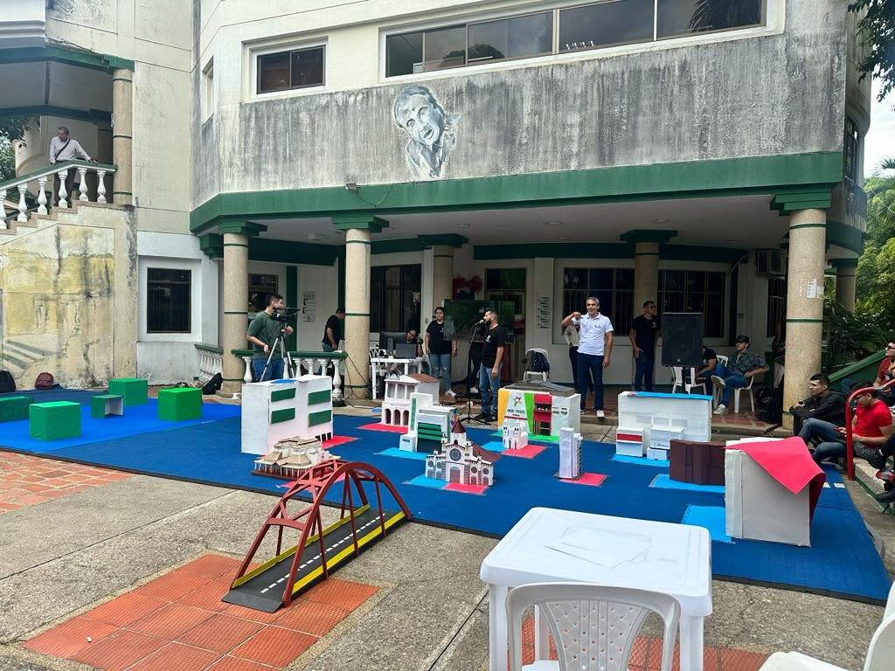
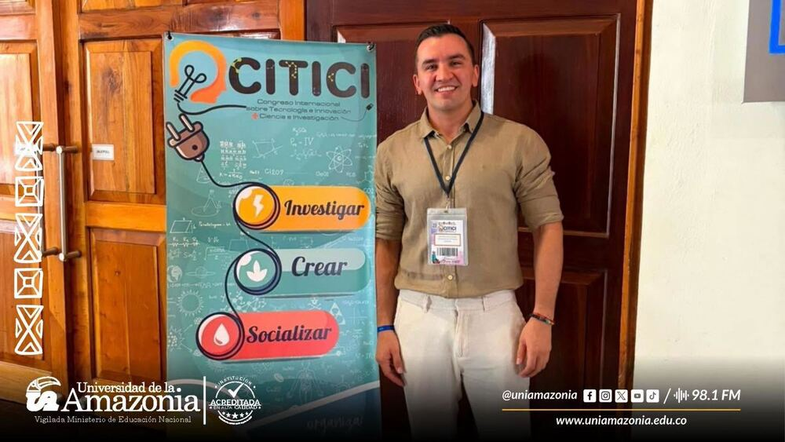
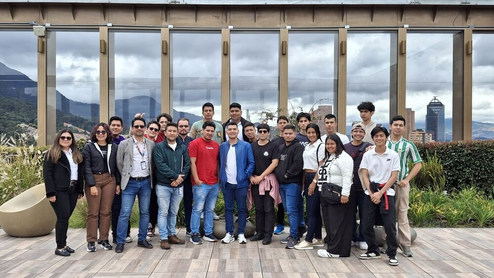
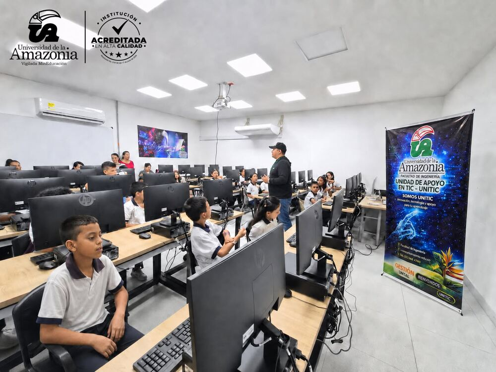
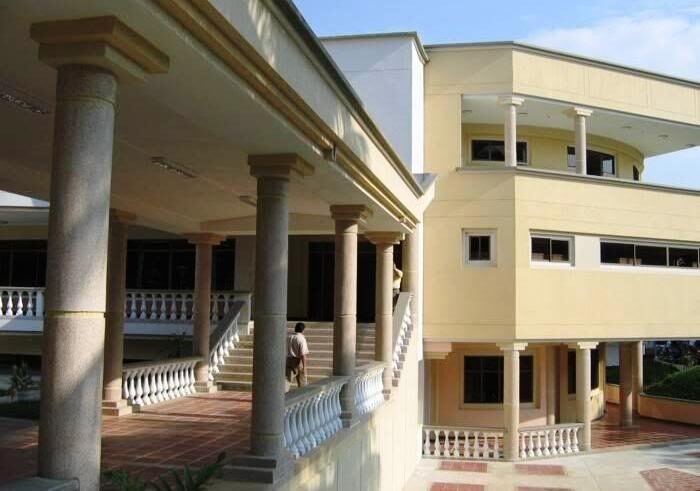
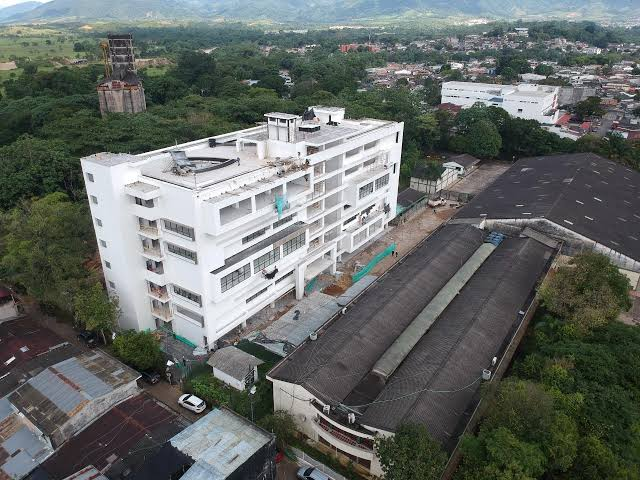

I
Semestre 1
18 cr.- Comunicación
- Deporte y cultura
- Matemáticas I
- Física I
- Biología general
- Introducción a la ingeniería
- Lógica y algoritmos I
Inicio › Programas › Pregrado › Ingeniería › Ingeniería de Sistemas
Facultad de Ingeniería · Sede Florencia · Código SNIES 52384
El Programa Ingeniería de Sistemas de la Universidad de la Amazonia tiene como principal propósito desarrollar procesos de formación integral de profesionales de la Ingeniería de Sistemas, mediante un currículo que aborda las ciencias básicas, la ingeniería, el campo tecnológico, investigativo, socio-humanista y de formación complementaria, para crear, innovar y aplicar soluciones computacionales que contribuyan al progreso de la región Amazónica y el país.
Fue creado mediante el Acuerdo 16 del 26 de agosto de 2004. El plan de estudios vigente se aprobó con el Acuerdo 44 del 2 de diciembre de 2020.
Ingeniería de software I, II y III, programación web y móvil.
Diseño y administración de bases de datos, estructuras de datos.
Redes informáticas I y II, sistemas operativos.
Inteligencia computacional I y II, modelos determinísticos.
Matemáticas, física, álgebra lineal, ecuaciones diferenciales.
Metodología de la investigación, taller de escritura científica.
El programa académico Ingeniería de Sistemas de la Universidad de la Amazonia, asume como encargo social la formación de profesionales íntegros, con capacidad para crear, innovar, formular y solucionar problemáticas organizacionales y productivas, apoyados en el desarrollo de sistemas de información soportados en las diferentes tecnologías informáticas, con el propósito de contribuir al desarrollo social, económico y tecnológico de la región amazónica y del país.
Ingeniería de Sistemas será un programa académico en permanente acreditación académica y social, líder en la formación integral de profesionales, competentes en el campo académico, investigativo y humanístico; comprometidos con el desarrollo tecnológico de la región amazónica y del país apoyados en tecnologías de información.

El Ingeniero de Sistemas de la Universidad de la Amazonia es un profesional que comprende las dinámicas del entorno, reconociendo las implicaciones y las responsabilidades legales, profesionales, éticas, sociales, económicas y culturales del ejercicio de su profesión. Así mismo, reconoce que la evolución constante de su disciplina y las condiciones cambiantes del entorno hacen necesario implementar estrategias autónomas de aprendizaje continuo, orientados a su perfeccionamiento profesional.
Este profesional podrá desempeñarse tanto en empresas públicas como privadas en puestos como:
 Plan de estudios
Plan de estudiosLos semilleros son grupos de estudiantes y docentes que se reúnen a investigar y desarrollar proyectos en un tema. Estos son algunos de los semilleros del programa registrados en SIGEPI, el sistema de la Vicerrectoría de Investigaciones.
Diana María Espinosa Sarmiento y Denis Lorena Álvarez Guayara
Desarrollo de habilidades en programación, algoritmia y resolución de problemas, con aprendizaje colaborativo y participación en maratones de programación.
Jesús Emilio Pinto Lopera
Inteligencia artificial y robótica, con énfasis en la programación de dispositivos embebidos, el internet de las cosas y los sistemas inteligentes.
Lubeimar Eduardo Gallego Ruiz
Investigación en redes informáticas, videojuegos y realidad virtual y mixta con fines académicos y sociales.
John Arley García Quintero
Sistemas con aplicación de realidad aumentada: análisis, diseño, implementación y pruebas de esta tecnología.
Oscar Fabián Patiño Perdomo
Soluciones relacionadas con la gestión ambiental y la cultura amazónica mediadas por las TIC.
Heriberto Fernando Vargas Losada
Gestión del conocimiento, electrónica, informática y comunicaciones, en alianza con otras entidades académicas y territoriales.
Ruth Dary Escobar Sarria
Cultura informática y estrategias para facilitar el aprendizaje con recursos didácticos e-learning.
Denis Lorena Álvarez Guayara y Lina Saza Bustos
Integración de las TIC en la educación para dar solución a problemáticas educativas.
Otros semilleros registrados: Enjambre, ISIS, Aeromodelismo SIA, Enfoque Sistémico, NUKAK Sistemas, Biometría y TIC, Bases de Datos de la Universidad de la Amazonia e Investigación en Informática Educativa. Fuente: SIGEPI.
 Actividades y eventos
Actividades y eventosCompetencias, congresos, salidas académicas y actividades con la comunidad.
Programación competitiva
Estudiantes del programa participaron en la Maratón Nacional de Programación, que hace parte de la competencia ICPC.

Programación competitiva
Participación en el campamento de programación competitiva realizado del 20 al 31 de julio en La Plata, Buenos Aires.

Robótica
Desafío Cloud: los robots compiten sobre una maqueta de la ciudad armada en el campus.

Investigación
Participación en el Congreso Internacional sobre Tecnología e Innovación, Ciencia e Investigación.

Salidas académicas
Estudiantes y docentes visitaron laboratorios e instituciones de educación superior fuera de la región.

 Proyección social
Proyección social
Estudiantes de colegio en una actividad en las salas de cómputo de UNITIC, la Unidad de Apoyo en TIC de la Facultad de Ingeniería.

 Sede principal, Florencia
Sede principal, Florencia
Edificio YapuraDirección: Sede Porvenir, Calle 17 Diagonal 17 con Carrera 3F, Barrio Porvenir, Florencia, Caquetá